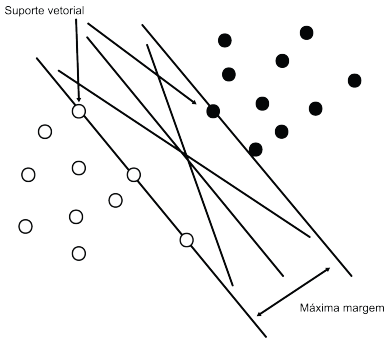
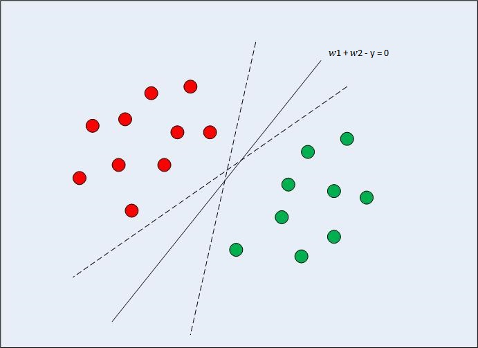
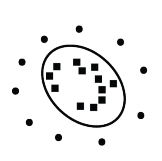
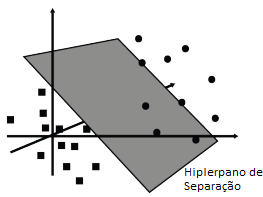

Support Vector Machine
O SVM é um modelo de aprendizado supervisionado, que classifica duas classes em +1 ou -1, visando sempre aumentar a distância entre os dois pontos, ou seja, o SVM maximiza a margem entre duas variáveis, separando assim as mesmas, representado pela figura abaixo:

A formulação do problema de separação linear no mais simples caso se dá da seguinte forma:
Onde:
-
é um vetor de variáveis explicativas de dimensão p x 1;
-
é um vetor de parâmetros, cuja dimensão é p x 1;
-
é o termo viés (intercepto).
A formulação do problema tem início na construção de uma matriz A, cuja dimensão é n x p. Nessa matriz cada coluna é uma característica de cada linha, que representa cada elemento da população.
Dado o conjunto de dados:
Onde e
são as variáveis, e são os elementos do conjunto e
a suas respectivas classes.
O SVM têm como objetivo encontrar o hiperplano que maximiza a margem entre as duas variáveis, da seguinte forma +
- y = 0, dado que os outras classes estão na forma
+
- y
-1 e
+
- y
+1.
Com isso as restrições podem ser escritas da seguinte forma:
(+1) x (1 + 2
- y)
+1
(+1) x (3 + 1
- y)
+1
(-1) x (5 + 2
- y)
+1
(-1) x (4 + 3
- y)
+1
A forma matricial equivale a:
D (Aw - y1) 1
Onde:
; D =
O objetivo então nesse caso é encontrar justamente o w e o y que vão maximizar a distância entre os dois conjuntos de dados. Nesse caso representado por +
- y = 0, onde a distância entre os dois conjuntos é:

Adaptado de Malik (2018)De forma que maximizar significa também minimizar
, ou seja, para o problema de otimização pode ser escrito tanto de uma forma quanto de outra. Sendo assim:
Minimizar:
SA: D (Aw - y1) 1
Tal que
,
Para resolver esse problema de otimização coloca-se na forma Dual de Wolfe (WOLFE, 1961):
Depois de encontrarmos w e y que minimizam , substituímos na função lagrangiana para maximiza-lá em função de
. Substituímos os resultado na função lagrangiana e assim chegamos ao problema Dual, para então colocar o problema em sua forma matricial.
SVM - Não linearidade
Porém geralmente a separação não é tão simples e na prática os problemas são mais complexos, evidenciando assim limitações nos modelos lineares. Por isso foram criados métodos baseados em kernels para problemas altamente complexos (VAPNIK, 1998), cujos dados não eram linearmente separáveis.
Com isso esses modelos em que as observações em não conseguem ser separadas por meio de uma função linear, acontece uma transformação
(x)
, onde as variáveis que antes estavam em dimensão
agora são transformadas para
e agora podem se tornar separáveis, essa nova dimensão é chamada de espaço característica.
E o responsável por fazer essa transposição para o espaço característica é justamente o kernel. Ou seja:

=>
Soman, Loganathan e Ajay (2009)Onde antes era x, agora com a transformação se torna (x) e onde era
, agora se torna
, onde q necessariamente é maior que p. Com isso o problema se separação agora se torna:
Minimizar:
SA: D (w - y1)
1
Tal que
, \textbf{y}
A separação dos dados ocorrerá sobre uma função linear para o espaço de característica. Ou seja para um f(x) = sinal(
x-y) = +1 quando (
x-y
0), ou f(x) = sinal(
x-y) = -1 quando (
x-y
0) , onde w,
(x)
.
Kernels
Nesta respectiva seção sera abordada uma breve descrição acerca do funcionamento de alguns kernels.
Linear
O kernel linear em relação as outras funções kernel é a mais simples. Ele é simplesmente o produto interno das variáveis com a adição de um possível parâmetro adicional . Ou seja:
k(,
) =
+
Polinomial
k(,
) = (
+
)
Onde é um parâmetro multiplicativo,
é um parâmetro aditivo e
é o grau do kernel polinomial, que para o nosso caso é 3, pois é o valor no pacote utilizado para as análises.
Gaussiano
O kernel Gaussiano é representado pela fórmula:
Sigmoid
O kernel Sigmoid vêm do campo das redes neurais, onde a função sigmoid é constantemente utilizada para ativação dos neurônios:
Onde representa o parâmetro multiplicativo e
o parâmetro aditivo.
Referências
MALIK, U.Implementing SVM and Kernel SVM with Python’s Scikit-Learn. 2018.
WOLFE, P. A duality theorem for non-linear programming.Quarterly of appliedmathematics, v. 19, n. 3, p. 239–244, 1961.
SOMAN, K.; LOGANATHAN, R.; AJAY, V.Machine learning with SVM and otherkernel methods. [S.l.]: PHI Learning Pvt. Ltd., 2009.
VAPNIK, V. N. Adaptive and learning systems for signal processing communications,and control.Statistical learning theory, John Wiley & Sons, 1998.